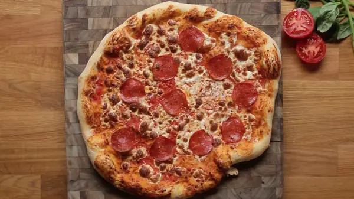

The World's Best Homemade Pizza

Make the best homemade version of everyone's favorite food.
Learn all of the steps to make the world's best and favorite
italian food from the comfort of your kitchen.
Homemade Pizza Tutorial Video
Ingredients
- 2 1/2 cups (600 ml) warm water
- 1 tsp sugar
- 2 tsp active dried yeast
- 7 cups all-purpose flour, plus more for dusting
- 6 tbsp extra virgin olive oil, plus more for greasing
- 1 1/2 tbsp kosher salt
- 1/4 cup semolina flour
Optional Toppings
- Tomato Sauce
- 1 28-ounces can whole tomatoes
- 1 tbsp kosher salt
- Margherita
- Mozzarella or Parmesan cheese
- Basil
- Tasty's Bianca
- Extra Virgin Olive Oil
- Dried Oregano
- Ricotta cheese
- Fresh basil pesto
- Pepperoni
Steps
- “Bloom” the yeast by sprinkling the sugar and yeast in the warm water.
Let sit for 10 minutes, until bubbles form on the surface.
- In a large bowl, combine the flour and salt. Make a well in the middle
and add the olive oil and bloomed yeast mixture. Using a spoon, mix
until a shaggy dough begins to form.
- Once the flour is mostly hydrated, turn the dough out onto a clean
work surface and knead for 10-15 minutes. The dough should be soft,
smooth, and bouncy. Form the dough into a taut round.
- Grease a clean, large bowl with olive oil and place the dough inside,
turning to coat with the oil. Cover with plastic wrap. Let rise for at
least an hour, or up to 24 hours.
- Punch down the dough and turn it out onto a lightly floured work surface.
Knead for another minute or so, then cut into 4 equal portions and shape
into balls.
- Cover the dough with a kitchen towel and let rest for another 30 minutes
to an hour while you prepare the sauce and any other ingredients.
- Preheat the oven as high as your oven will allow, between 450-500˚F (230-260˚C).
Place a pizza stone or heavy baking sheet (turn upside down so the surface is flat)
to the oven.
- Meanwhile, make the tomato sauce: Add the salt to the can of tomatoes and puree
with an immersion blender, or transfer to a blender or food processor and puree
until smooth.
- Once the dough has rested, take one portion and start by poking the dough with
your fingertips. Then, stretch and press the dough into a thin crust. Make it
thinner than you think it should be, as it will slightly shrink and puff up
during baking!
- Sprinkle semolina onto an inverted baking sheet and place your stretched crust onto
it. Add the sauce and ingredients of your preference.
- Bake for 15 minutes or until the crust and cheese looks golden brown.
- Add any garnish of your preferences and enjoy!
Odin Recipes